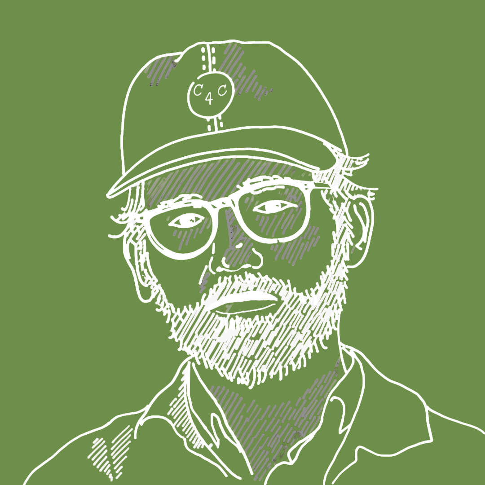
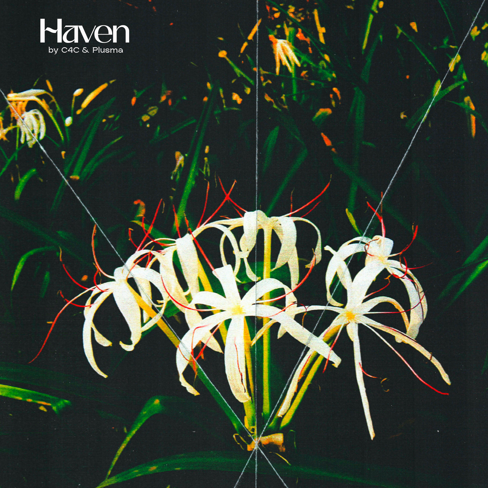
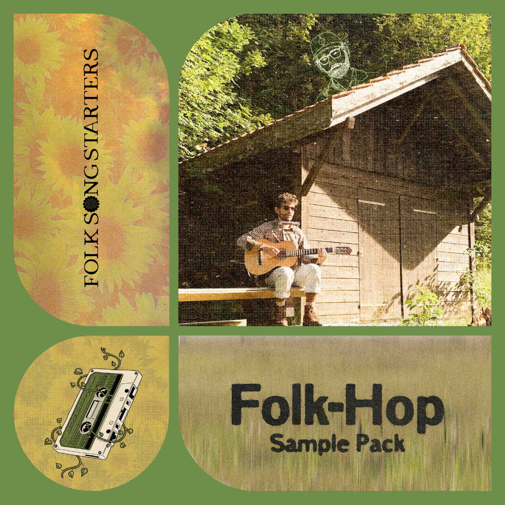

Start here
C4C 🌻 Essentials
A little journey through my world of folk-hop beats, with fan favourites first.
Listen to the playlist
Folk-hop beats made by hand and heart from Switzerland
Listen to C4CStart here
A little journey through my world of folk-hop beats, with fan favourites first.
Listen to the playlistLatest release
Here's my new collab with Plusma. Some cozy folky jazzy vibes for Autumn :)

Listen nowLatest news
For those looking to bring organic drums and real acoustic instruments into their music. Copyright Free. Made with Mondo Loops.

Explore the pack